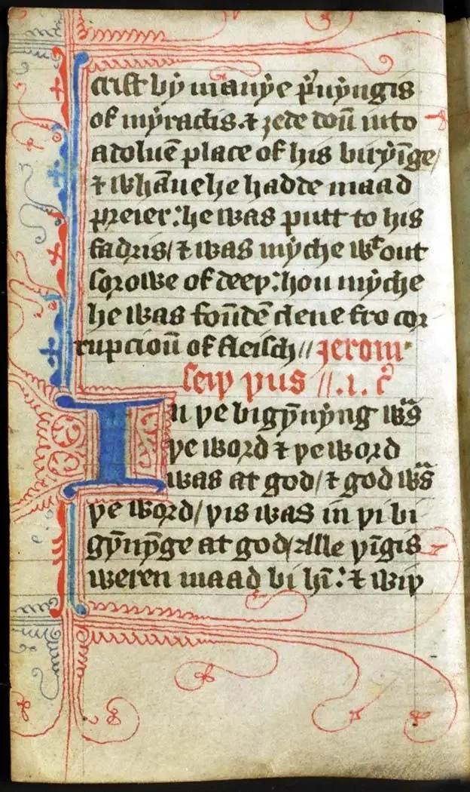
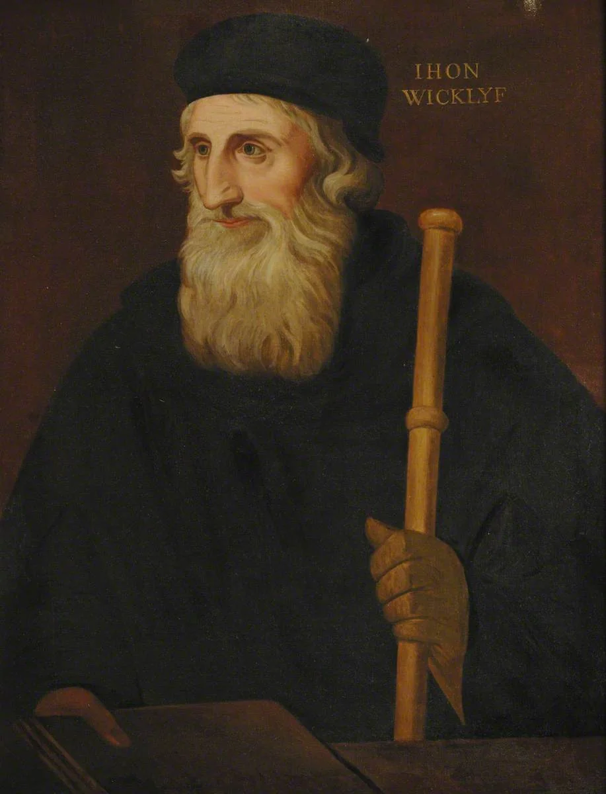
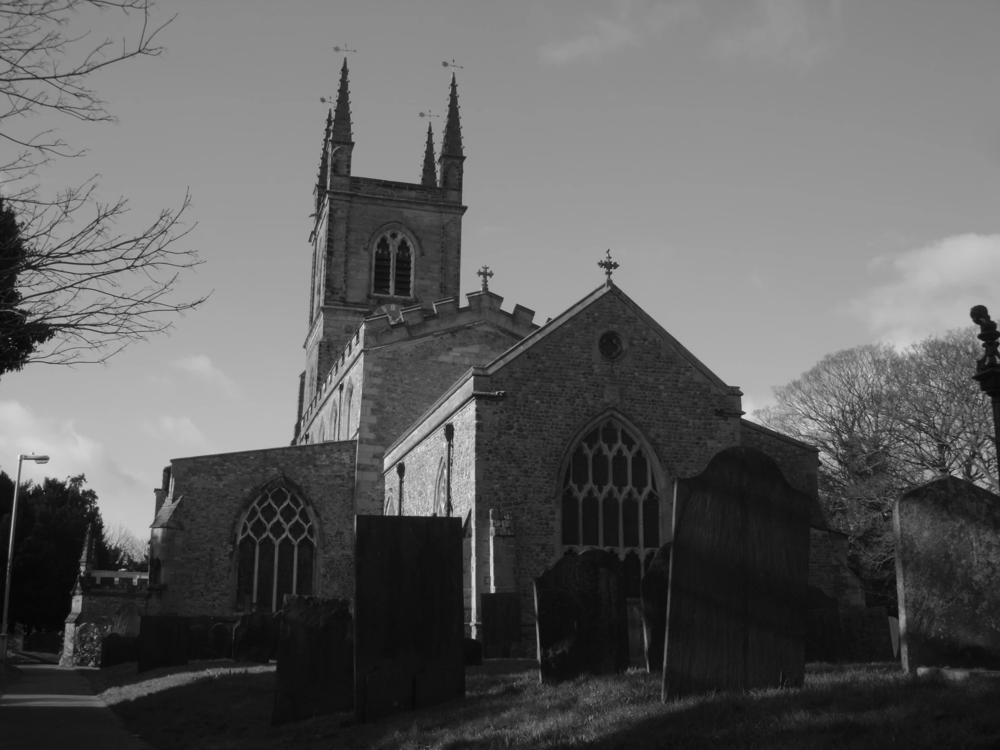
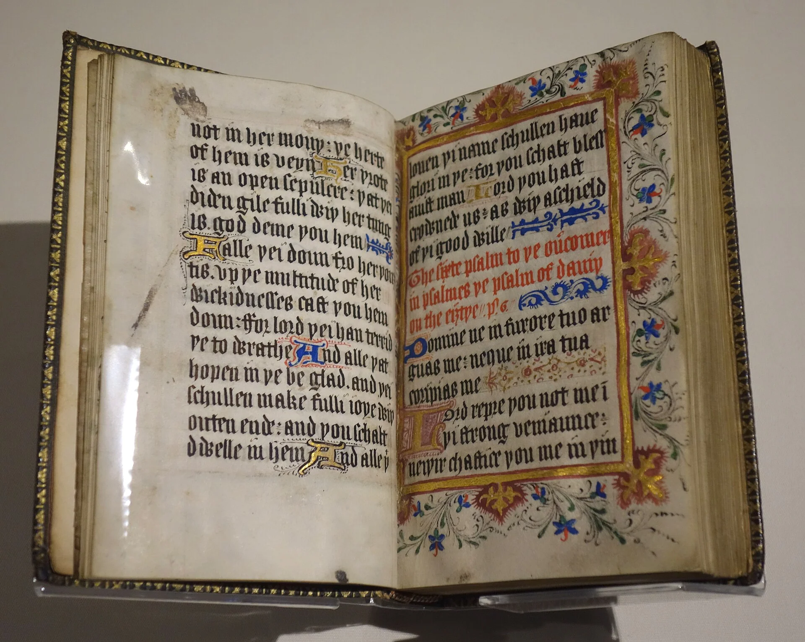

아직 펼치지 않은 카드모두의 말로 찍은 성경 · 3위클리프 성경14세기 잉글랜드에서 성경을 영어로 옮긴 사람들은 이단으로 몰렸어요. 그런데도 손으로 베낀 영어 성경이 250권 넘게 남았어요. 어떻게 된 일일까요?600년 전 영어로 손으로 쓴 성경이야. 읽을 수 있을까?
14세기 말잉글랜드 · 옥스퍼드와 루터워스
위클리프 성경
14세기 말 잉글랜드에서 성경 전체가 처음으로 영어로 옮겨졌어요. 이 번역에 긴 머리말을 붙인 사람은 자기 이름 대신 ‘보잘것없는 사람’이라고만 적고, 어떻게 옮겼는지를 네 차례로 남겼어요. 그 차례를 따라가며 창세기의 한 문장이 영어답게 바뀌는 것을 봐요.
600년 전, 이름도 안 쓴 사람이 친구들과 라틴어 성경을 영어로 옮겼대. 어떤 차례로 했는지 같이 해 볼까?
검수 전 시안이에요(기준서 1판). 번역의 차례는 번역자가 머리말(「총서문」 15장)에 직접 적은 말을 따랐고, 중세 영어는 출판된 판에서 옮겨 왔어요. 번역 차례 그림은 이 안내서가 그렸어요. 위클리프의 초상은 그가 세상을 떠나고 440여 년 뒤에 그린 것이에요. 상상은 ‘눈 감고 상상해 보기’에만 썼어요.
시안 확인용카드 단계 미리 보기
1
옥스퍼드에서 루터워스까지
14세기 잉글랜드 옥스퍼드에 존 위클리프(John Wycliffe)라는 이름난 신학자가 있었어요. 그는 1360년 무렵 옥스퍼드 베일리얼 칼리지의 학장을 지냈어요.
그때까지 잉글랜드에는 성경 전체를 영어로 옮긴 책이 없었어요. 위클리프 둘레의 사람들이 라틴어 성경 불가타(히에로니무스가 옮겨 중세에 두루 쓰던 라틴어 성경)를 영어로 옮기기 시작했어요. 학자들은 위클리프가 이 일을 일으켰지만, 직접 옮기지는 않았을 거라고 봐요.


위클리프는 1374년부터 루터워스(Lutterworth) 교회를 맡았고, 1384년 12월 31일 그곳에서 세상을 떠났어요. 번역은 그 뒤에도 이어졌어요. 사람이 바뀌어 가며 모두 20년쯤 걸린 일이었어요.
왼쪽 초상은 그가 세상을 떠나고 440여 년 뒤인 1828년 무렵, 토머스 커크비(Thomas Kirkby)가 그렸어요. 지금 베일리얼 칼리지에 있어요. 오른쪽은 2007년에 찍은 루터워스의 성 마리아 교회예요.
옛날 옥스퍼드에 위클리프라는 선생님이 있었대. 그 둘레 사람들이 라틴어 성경을 영어로 옮기기 시작했어.
물어보기라틴어로만 된 책이 있다면, 우리는 읽을 수 있을까?
2
네 차례
성경 전체를 영어로 옮긴 뒤, 누군가 그 번역에 열다섯 장(章)이나 되는 긴 머리말을 붙였어요. 이 머리말을 「총서문」이라고 불러요. 그 마지막 장에 어떻게 옮겼는지를 네 차례로 적었어요.
그는 자기 이름을 적지 않았어요. 자신을 ‘a symple creature’, 곧 ‘보잘것없는 사람’이라고만 불렀어요. 아래 그림의 세 줄은 빛이 생기는 첫 장면(창세기 1장 3절)의 말이에요.
단추를 누를 때마다 그가 적은 차례를 하나씩 해 봐요. ‘fiat lux(빛이 생겨라)’의 낱말들이 어떻게 자리를 바꾸는지 눈여겨보세요.
이 안내서가 그린 번역 차례 · 「총서문」 15장(TEAMS 판)과 창세기 1장 3절(라틴어 불가타 · 초기판 · 후기판)을 바탕으로
창세기 1장 3절의 모습
- 라틴어: fiat lux
- 초기판: 라틴어 차례 그대로
- 후기판: 영어 차례로
- 여러 벗이 함께 고침
다 옮겼어요. 여러 권을 견주어 바로잡은 라틴어 한 문장이, 여러 벗의 손을 거쳐 영어다운 한 문장이 되었어요.
이름도 안 쓴 사람이 친구들이랑 차례차례 옮겼대. 빛이 생기는 말을 영어로 바꿔 보자.
물어보기낱말을 하나씩 그대로 바꾸면, 말이 자연스러울까?
3
보잘것없는 사람
머리말을 쓴 사람은 왜 이 일을 했는지도 적었어요. 15장의 첫머리는 이래요.
“이런 까닭들과 다른 까닭들로, 하나님께서 구원받기를 바라시는 우리 나라의 모든 사람을 구하려는, 모두를 향한 사랑으로, 보잘것없는 사람이 성경을 라틴어에서 영어로 옮겼습니다.”
「총서문」 15장 첫머리 · TEAMS 판(로체스터 대학)의 중세 영어를 이 안내서가 옮김
그는 지혜로운 사람이 잘못 옮긴 데를 찾으면 바른 뜻을 넣어 달라고 부탁했어요. 그러면서도 흔히 쓰는 라틴어 성경들이 새 영어 성경보다 고칠 데가 더 많다고 적었어요.
그가 누구였는지는 지금도 몰라요. 1729년 한 학자가 존 퍼비(John Purvey)라고 짐작한 뒤 오래 그렇게 알려졌지만, 중세의 기록에는 그 증거가 없어요.
머리말의 마지막 줄은 기도예요. 우리 모두가 성경을 잘 알고 잘 지키며, 마지막에는 그 일로 겪는 괴로움도 기쁘게 견디게 해 달라고요.
이름도 안 쓰고 성경을 옮긴 사람이 있었대. 틀린 데를 찾으면 고쳐 달라고 부탁했대.
물어보기내가 만든 것을 친구가 고쳐 주면, 어떤 마음이 들까?
4
금지된 뒤에도
1407년 무렵, 캔터베리 대주교 토머스 아런들(Thomas Arundel)은 옥스퍼드의 교회 회의에서 새 규정을 마련했어요. 1409년에 펴낸 이 규정은 누구도 허락 없이 성경을 영어로 옮기지 못하게 했어요.
위클리프 때부터 나온 번역도 드러내 놓고든 몰래든 쓰면 안 되었어요. 새 번역은 주교나 교회 회의의 허락을 받아야 했어요. 이제 영어 성경을 가진 것만으로도 이단(교회가 그릇되었다고 정한 가르침)이라는 의심을 받을 수 있었어요.

그래서 이 책을 가진 사람들은 대부분 책에 자기 이름을 적지 않았어요. 의심받지 않으리라 믿을 수 있던 것은 왕과 큰 귀족, 수도회 사람들과 수도원 같은 곳뿐이었어요. 헨리 6세는 자기가 가졌던 화려한 한 권을 런던의 카르투시오회 수도원에 주었어요.
그런데도 베껴 쓰기는 이어졌어요. 지금 250권쯤 남았는데, 중세 영어로 쓴 어떤 책보다 많아요. 절반 가까이는 색과 금박으로 장식했어요. 위 사진의 시편도 금지령이 나오고 90년쯤 지난 1500년 무렵에 이렇게 곱게 베꼈어요.
영어 성경을 가지면 의심받던 때가 있었대. 그래도 사람들은 계속 베껴 썼어.
물어보기오른쪽 쪽에서 금빛 테두리를 찾아볼까?
눈 감고 상상해 보기
돌벽 방, 큰 탁자 위에 옛 라틴어 성경 여러 권이 펼쳐져 있어요. 한 사람이 라틴어 한 줄을 천천히 소리 내어 읽어요. 다른 사람이 그 말을 영어로 이렇게도 저렇게도 바꿔 말해 봐요. 깃펜이 사각사각 종이를 긁어요.
눈을 감아 봐. 탁자 위에 두꺼운 책이 잔뜩! 누가 라틴어를 읽으면, 친구가 영어로 바꿔 말해. 사각사각, 깃펜 소리.
나의 자리
자기 이름 대신 ‘보잘것없는 사람’이라고만 적은 번역자는, 옛 성경들을 펼쳐 놓고 무엇을 가장 아꼈을까요?
이름도 안 쓰고 성경을 옮긴 사람이 있었대. 그 사람한테 가장 소중한 건 뭐였을까?
마음에 닿는 한 줄을 고르거나 직접 써 보세요. 한 줄을 남기면 이 자리의 도장이 찍혀요. 이 기기에만 저장돼요.
더 깊이
궁금한 칸만 펼쳐 읽어도 괜찮아요.
알고 보면
라틴어 성경도 고쳤어요 여러 권을 견주다 보니 라틴어 성경의 틀린 곳도 드러났어요. 메리 도브는 창세기 29장 25절을 예로 들어요. 흔히 베낀 라틴어 성경에는 ‘어찌하여 레아를 대신 들여보냈느냐’는 뜻의 글이 있었지만, 번역자들이 찾은 바른 글은 ‘어찌하여 나를 속였느냐’였어요.
낱말 차례가 뜻을 흐릴 때 「총서문」은 라틴어 ‘Dominum formidabunt adversarii eius’를 예로 들어요. 낱말 차례대로 옮기면, 현대 영어로 ‘the Lord his adversaries should fear’처럼 되어 누가 누구를 두려워하는지 헷갈려요. 그래서 ‘the adversaries of the Lord should fear him’(주님의 원수들이 그분을 두려워하리라)이라는 뜻으로 옮겼다고 적었어요.
“스승이 읽으며, 나는 선다” 라틴어에는 두 일을 짧게 한데 묶는 꼴이 있어요. 「총서문」은 ‘the maistir redinge, I stonde’(스승 읽으며, 나 서 있다)를 ‘while the maistir redith, I stonde’(스승이 읽는 동안 나는 서 있다)처럼 풀어서 옮길 수 있다고 해요.
신학 박사가 살펴본 책 맨체스터 존 라일랜즈 도서관의 한 후기판 신약(English MS 77)에는 값이 4파운드 6실링 8펜스였고, 어머니가 사기 전에 토머스 에보럴 박사와 아이브 박사가 살펴보았다는 메모가 있어요. 두 사람은 런던의 한 성직자 학교를 이끌던 신학자였어요.
기록마다 다른 점
누가 옮겼나 초기판의 일부는 니콜라스 헤리퍼드(Nicholas Hereford)가, 후기판은 위클리프의 비서였던 존 퍼비가 이끌었다고 소개하는 곳이 많아요(킹스 칼리지 런던 전시 등). 하지만 앤 허드슨은 퍼비라는 이름이 1729년의 짐작에서 시작되어 1731년에 사실처럼 굳었다고 해요. 메리 도브는 「총서문」을 이름 모를 사람의 글로 다루고, 위클리프·헤리퍼드·존 트레비사(John Trevisa)가 모두 한몫했다고 봐요.
규정을 마련한 해 아런들의 규정을 마련한 옥스퍼드 회의를 허드슨은 1407년, 킹스 칼리지 런던은 1408년으로 적어요. 펴낸 해는 1409년이에요.
금지가 끝난 때 도브는 이 금지가 1529년까지 이어졌다고 하고, 허드슨은 1530년대까지라고 적어요. 킹스 칼리지 런던은 16세기에 들어서도 한참 이어졌다고 해요.
몇 권이 남았나 허드슨과 도브의 책은 250권쯤, 도브의 다른 글은 250권이 넘는다고 적어요. 조각만 남은 것까지 함께 센 수예요.
더 보기
확인한 날 · 2026년 11월 18일 · 바뀌기 쉬운 정보라 정기적으로 다시 확인해요
「총서문」의 중세 영어 원문과, 사람들이 실제로 사서 읽던 후기판 신약을 누리집에서 볼 수 있어요.
네 차례 끝까지 금박
옛 성경을 모으는 데서 여럿이 함께 고치는 데까지, 여섯 단계를 끝까지 해 보면 카드에 금박이 입혀져요.
여섯 단계를 끝까지 해 보기
아이와 함께 채색
아이와 함께 ‘영화처럼 보기’를 끝까지 보면 카드가 채색돼요.
아이와 함께 ‘영화처럼 보기’를 끝까지 보기
근거 보기 (17)
- TEAMS(로체스터 대학) 「The Wycliffite Bible: From the Prologue」 — 「총서문」 15장 중세 영어: ‘a symple creature’, 우리 나라 모든 사람을 구하려는 ‘comune charité’, 네 차례(옛 성경·옛 학자의 책·풀이를 모아 라틴어 한 권을 ‘sumdel trewe’하게 · 본문과 풀이로 새로 공부, 구약은 특히 리라 · 옛 문법학자와 신학자에게 어려운 말과 문장 · 뜻을 따라 될 수 있는 한 똑똑히, 고칠 때 좋은 벗 여럿), 낱말이 아니라 뜻을 따라 옮김, ‘the maistir redinge, I stonde’, ‘Dominum formidabunt adversarij ejus’, 흔한 라틴어 성경이 더 고칠 데가 많음, 지혜로운 사람이 잘못을 찾으면 바른 뜻을 넣어 달라, 마지막 기도
- Bible Research: 「총서문」 15장 현대 영어 옮김(포셜·매든 1850년 판 바탕) — 셋째 차례(어려운 낱말과 구절은 옛 문법학자·신학자에게), ‘the Lord his adversaries should fear’를 ‘the adversaries of the Lord should fear him’으로, 마지막 기도
- 앤 허드슨, 「The First Complete English Bible」(틴들 학회지 2) — 남은 사본 250권쯤(중세 영어 책 가운데 가장 많음), 불가타에서 옮김, 초기판은 라틴어 짜임과 낱말 차례까지 지킴, 영어답게 고친 후기판이 표준, 위클리프는 일으킨 사람이고 직접 옮기지는 않았을 것, 옥스퍼드에서 시작한 공동 작업, 퍼비라는 이름은 1729년 워털랜드의 짐작과 1731년 루이스, 1407년 마련·1409년 펴낸 아런들 규정과 1530년대까지, 헨리 6세의 책과 런던 카르투시오회
- 메리 도브(2007), 「The First English Bible: A Lost Opportunity」(영국 학술원 리뷰 10) — 250권 넘게 남음(조각 포함, 대부분 전문가 솜씨), 1409년 규정(드러내든 몰래든 쓰지 못함, 새 번역은 주교나 교회 회의의 허락), 20년쯤 걸린 일과 바뀐 사람들, 창세기 29장 25절의 라틴어 고침, 의심받지 않을 수 있던 왕·큰 귀족·수도회와 수도원, 보들리 277(헨리 6세가 런던 카르투시오회에 줌), 라일랜즈 English MS 77(4파운드 6실링 8펜스, 에보럴 박사와 아이브 박사가 살펴봄, 휘팅턴 칼리지)
- 메리 도브, 「The First English Bible」(케임브리지 대학 출판부 2007) 맛보기 — 250권쯤, 1409년 금지와 1529년까지, 가진 사람들이 이름을 적기 꺼림(이단 의심), 머리말은 이름 모를 사람의 글로 다룸, 위클리프·헤리퍼드·트레비사가 모두 한몫
- 킹스 칼리지 런던 특별 소장품 전시 「The Wycliffe Bible」 — 1408년 옥스퍼드 회의, 허락 없는 번역과 읽기 금지, 16세기에 들어서도 이어짐, 헤리퍼드와 퍼비를 드는 오랜 설명
- 브레폴스: 「The Courtly and Commercial Art of the Wycliffite Bible」 책 소개 — 남은 사본의 절반 가까이가 채색 장식
- 위키문헌 「Bible (Early Wycliffe)」 창세기(2022년 보관본) — 초기판 ‘And God seide, Be maad liȝt; and maad is liȝt’
- eBible.org 위클리프 성경 창세기 1장 — 후기판 ‘And God seide, Liyt be maad, and liyt was maad’(ȝ를 y로 적음)
- Latin Vulgate(drbo.org) 창세기 1장 — ‘Dixitque Deus: Fiat lux. Et facta est lux.’
- 히스토릭 잉글랜드 등록 문화재 1211040(루터워스 성 마리아 교회) — 위클리프가 1374년부터 1384년까지 주임 사제
- 히스토리 투데이 「John Wycliffe condemned as a heretic」 — 1374년 루터워스, 1384년 12월 28일 미사 중 쓰러져 31일 세상을 떠남
- 위클리프 칼리지(토론토) 기록관 — 1360년 베일리얼 칼리지, 학장, 1361년 그만둠, 1374년 4월 7일 루터워스
- 아트 UK: 토머스 커크비 「John Wycliffe (c.1330–1384)」 — 1828년 무렵, 캔버스에 유화, 옥스퍼드 베일리얼 칼리지
- 맨체스터 대학 디지털 컬렉션: 후기판 위클리프 신약(English MS 77)
- 위키미디어 공용: 대영 도서관 전시 ‘위클리프 시편, 시편 6편, 잉글랜드, 1500년 무렵’(Daderot, CC0) · 루터워스 성 마리아 교회(2007) · 커크비의 초상
- 위키백과 Wycliffe's Bible — 길잡이로만
그림·사진·소리 출처
‘처음 만나는 기독교 문화’의 깊은 카드예요. 카드 단계와 남긴 글은 이 기기에만 저장돼요.